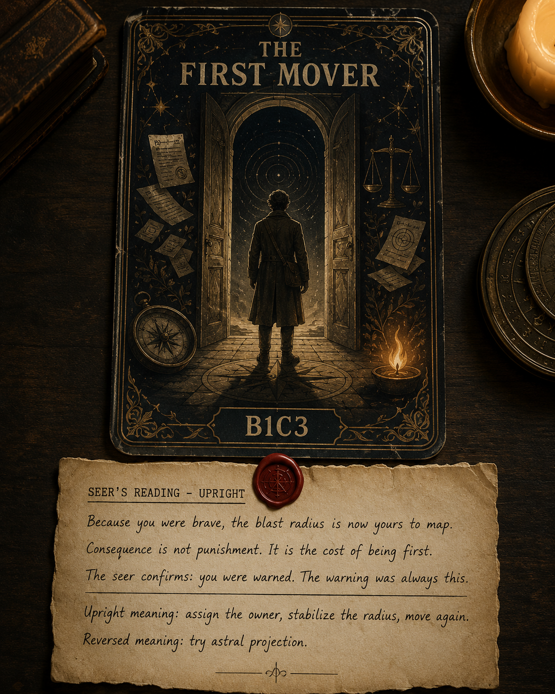
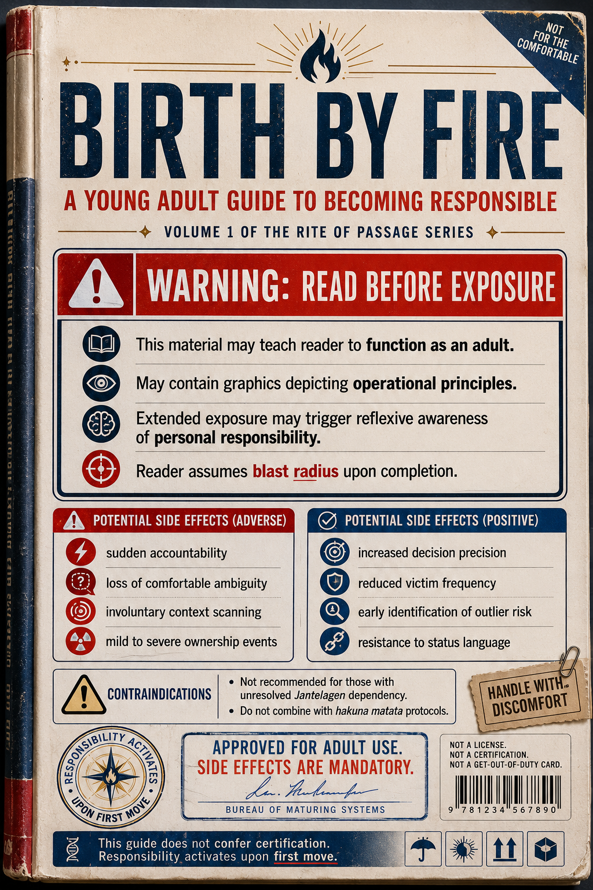
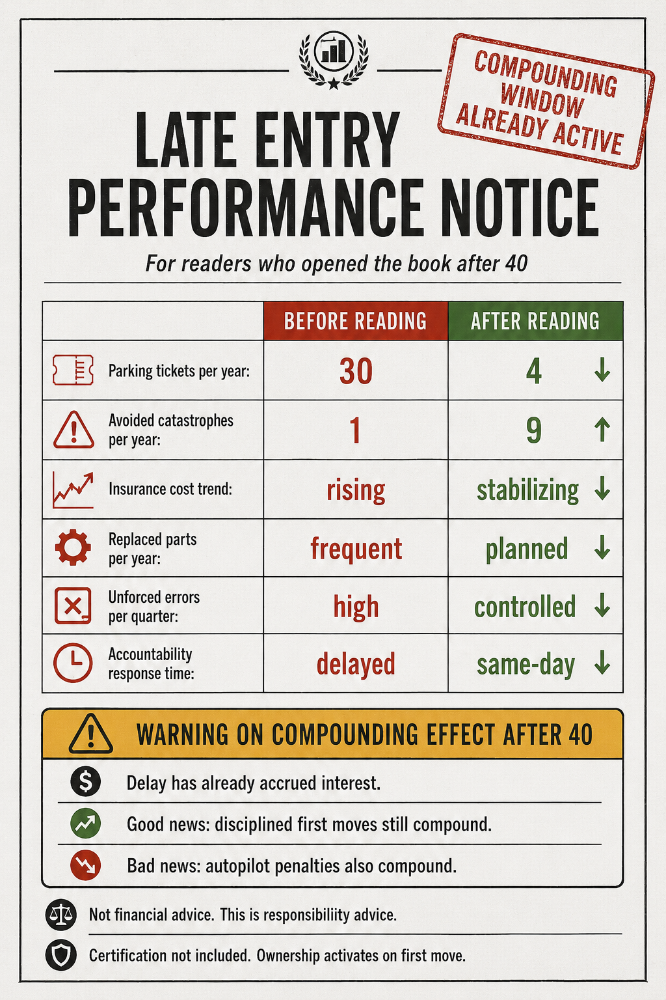
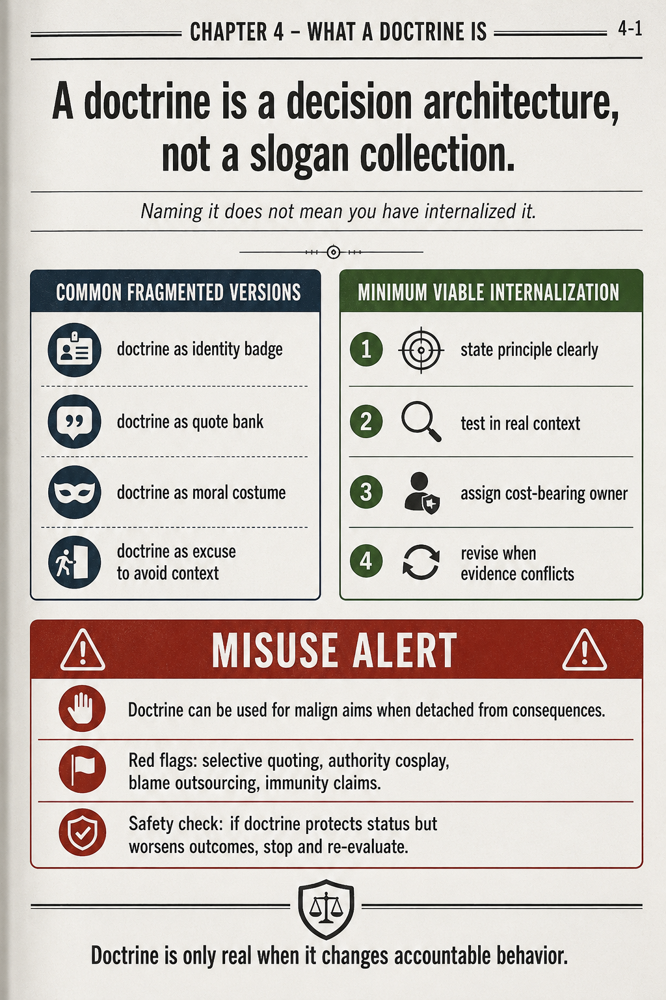
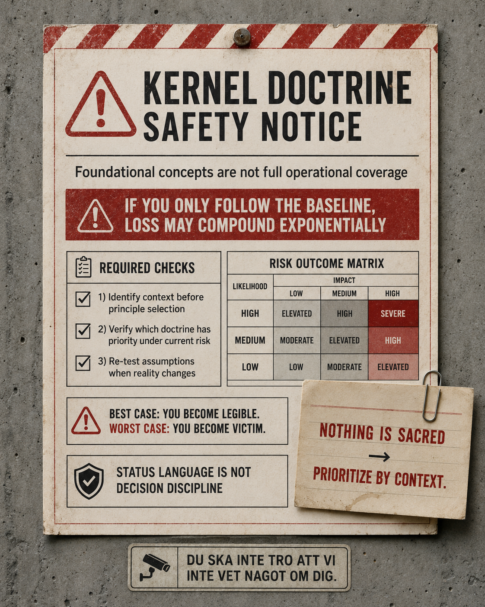
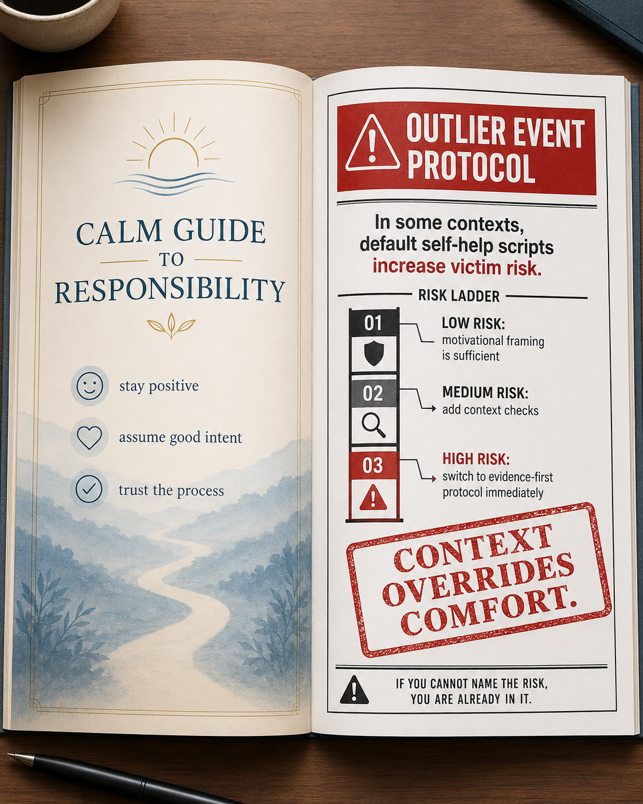
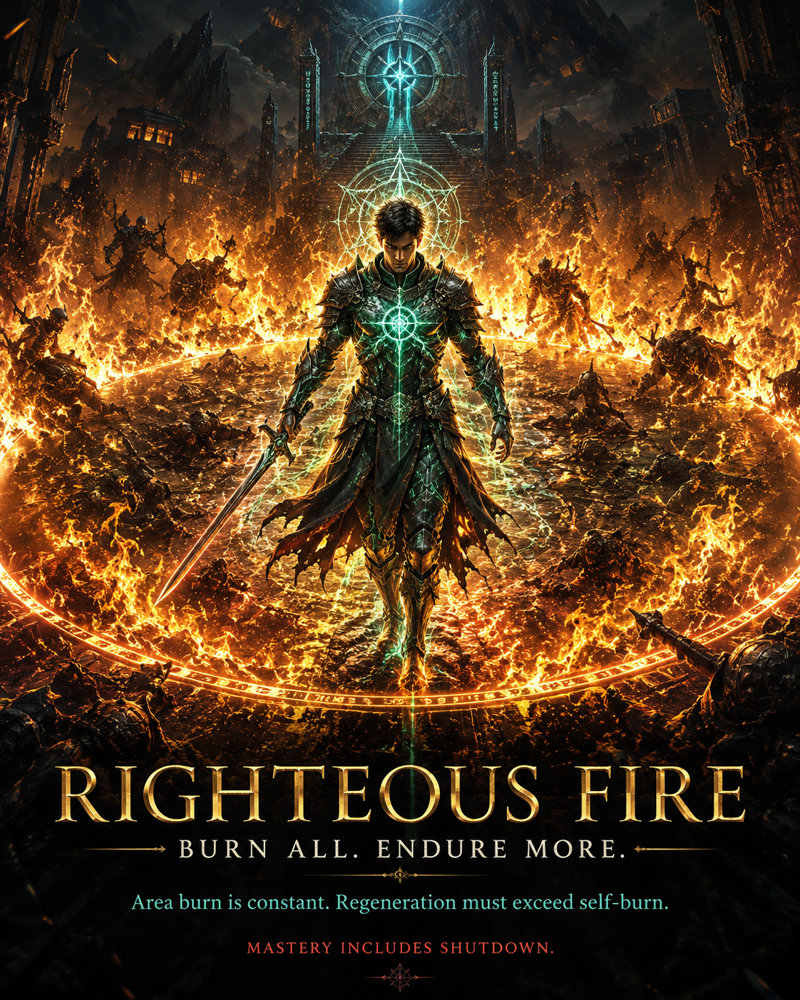

Why This Started
This began as a meme workflow and became a method problem. The first posters looked good, but they were often generic. We needed satire that did not just signal tone, but improved decision quality under pressure.
The shift was RF-warning: righteous fire plus warning framing plus Schrodinger truism. In plain language: take polite principles and force them to survive high-stakes context.
The Method in Four Moves
- Start from a truism: take responsibility, tell the truth, context matters.
- Translate it into operational consequence language.
- Deliver it as a warning artifact: bulletin, protocol card, white paper, diagnosis journal.
- Add one dry absurd detail so the humor lands without collapsing into nonsense.
What The Comedy Attempts Revealed
The sequence stopped being random image generation and became an accidental research loop. Each iteration exposed a stable pattern about doctrine and decision behavior.
- The target shifted from people to failure modes. The strongest pieces did not mock individuals. They mocked under-specification, status language, and responsibility outsourcing.
- Format changed perceived truth value. The same claim read as noise in poster form but read as actionable when framed as bulletin, protocol, warning label, or diagnostic record.
- Humor acted as compression. One absurd line plus one hard consequence carried more operational clarity than motivational prose.
- Recurrence exposed invariants. Across tarot, civic notices, clinical sheets, and book warnings, the same core instruction survived: assign owner, name context, re-test against evidence.
That is the key meta-result: the comedy worked when it forced accountability semantics, not when it merely looked edgy.
Why This Lands More Now
The arc now lands because it has progression pressure, not just visual variety. It moves from tone, to responsibility framing, to measurable consequence, to misuse alerts, and finally to self-audit.
A quick reader check makes this practical:
- If a principle sounds true but does not assign a cost-bearing owner, it is incomplete.
- If a doctrine improves language but worsens outcomes, treat it as active risk.
- If a warning cannot survive context changes, it is branding, not doctrine.
Showcase Arc
The arc below is the key point. The project moved from visual satire to usable warning logic.
1) Baseline Tone (strong visual, weak specificity)

2) Recursion Satire Becomes Legible

3) Bureaucratic Absurdity Prototype (Precursor)

4) The First Mover (Tarot Bridge)

4b) Birth By Fire (Responsibility Exposure Manual)

4c) Late Entry Performance Notice

4d) Document-First Warning Frame

4e) Doctrine Is Decision Architecture

5) Kernel Doctrine: Necessary, Not Sufficient

5b) Kernel Variant: Safety Notice

6) Self-Help Meets Outlier Risk

7) Civic Media Advisory Frame

8) Clinical Diagnosis Journal (Deep Variant)

What This Actually Says About Doctrine
Doctrine is useful when it changes decisions, not when it only improves language. A principle that cannot survive catastrophe constraints is under-specified. A principle that cannot be overridden by context is being treated as sacred.
That is where RF-warning helps. It does not reject principles. It stress-tests them.
Closing Self-Roast
The final image should roast this process too: we built multiple doctrines, then overexplained the humor so the humor would work. In other words, we built a warning system about over-framing by adding more framing.

Get it?
RF Background: What Righteous Fire Is In PoE1
Righteous Fire in Path of Exile 1 is a permanent burn aura with a built-in trade: you burn enemies around you, but you also burn yourself. The build works only if your mitigation and regeneration outscale your self-damage.
Core Mechanics
- Always-on damage aura: once enabled, RF applies fire damage over time to nearby enemies and self-damage to your Life and Energy Shield.
- Spell damage scaling: RF grants strong spell-damage support to your setup, which is why it pairs naturally with Fire Trap for bosses.
- Damage over time, not hit: no hit means no leech trigger and no on-hit interactions, so recovery must come from regeneration and sustain systems.
- Sustain equation: survival requires maximum fire resistance and high regeneration so incoming self-burn is consistently overpowered.
Build Logic And Gear Priorities
- Primary defensive stack: Life, maximum fire resistance, armor, and reliable regeneration.
- Damage stack: fire damage over time multiplier, gem levels for fire skills, and exposure/curse support.
- Typical shell: RF handles map clear, Fire Trap handles focused single-target windows.
- Utility layer: Purity of Fire, Determination, and defensive automation like CWDT plus Molten Shell stabilize high-pressure moments.
Why This Matters For The Metaphor
RF is not "press button to win." It is "accept permanent cost, then build enough structure to carry it." That is exactly why it became a useful symbol for doctrine work: if your framework cannot pay its own ongoing cost, it is not a framework, it is decoration.

What A PC Game Can Teach About Life
Good game systems teach truth through cost functions. They do not reward slogans, they reward correct trade-offs under pressure.
- Power without sustain collapses.
- Comfort loops hide compounding penalties.
- Discipline beats intensity when the system is persistent.
- You cannot outsource consequence forever.
This was not a detour from doctrine work. It was doctrine stress testing through satire, with a game mechanic that refuses to lie about cost.